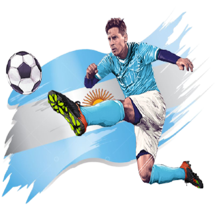

Conmebol Copa America 2021

Messi was born on 24 June 1987 in Rosario, Santa Fe, the third of four children of Jorge Messi, a steel factory manager, and his wife Celia Cuccittini, who worked in a magnet manufacturing workshop.
Neymar da Silva Santos Júnior was born in Mogi das Cruzes, São Paulo, to Neymar Santos Sr. and Nadine da Silva. He inherited his name from his father, who is a former footballer .

At age 16, Ronaldo was promoted from Sporting's youth team by first-team manager László Bölöni, who was impressed with his dribbling.[22] He subsequently became the first player to play for the club's under-16.
Di María was transferred to Portuguese side Benfica in July 2007, where he played as a winger. Benfica paid Rosario Central €6 million for 80% of his sports rights and 50% of sports right of Andrés Díaz.
Diego Armando Maradona was born on 30 October 1960, at the Policlínico (Polyclinic) Evita Hospital in Lanús, Buenos Aires Province to a poor family that had moved from Corrientes Province.
Pele was born Edson Arantes do Nascimento on 23 October 1940, in Três Corações, Minas Gerais, Brazil, the son of Fluminense footballer Dondinho (born João Ramos do Nascimento).

Dybala was born in Laguna Larga, Córdoba, Argentina.[6] His grandfather, Bolesław Dybała, was from the village of Kraśniów in Poland; he fled from his country of birth to Argentina during World War II.

Mbappé was born in Paris[5] and was raised in Bondy, Seine-Saint-Denis, a commune 10.9 km (6.8 mi) from the centre of Paris.[6] His father, Wilfried, is from Cameroon, and, as well as being Mbappé's agent.

Icardi was born in Rosario, Argentina and moved to Canary Islands when he was nine. He began his football career with Vecindario in Gran Canaria, and scored over 50 goals in their youth categories. In 2007.

Mesut Özil[12] was born on 15 October 1988[13] in Gelsenkirchen, North Rhine-Westphalia.[14] His grandfather moved as a Gastarbeiter from Zonguldak, Turkey to Germany.

Kevin De Bruyne (born 28 June 1991) is a Belgian professional footballer who plays as a midfielder for Premier League club Manchester City, where he is vice-captain, and the Belgium national team.

Philippe Coutinho Correia (born 12 June 1992) is a Brazilian professional footballer who plays as an attacking midfielder or winger for Spanish club Barcelona and the Brazil national team.
Copa America 2021 final highlights, Brazil vs Argentina: Argentina win the Copa America title for the first time since 1993 as they beat Brazil 1-0 in the final at the historic Maracana Stadium in Rio de Janeiro.